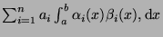
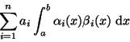

Next: About this document ...
Up: Test Plan for Automation
Previous: 中文使用
We know the math is the most beautiful language in the world,
therefore, we need a beautiful tool to write such language.
LATEXis no doubt the best one.
Here is the example of math in the same text line

example of math in a seperate line

Cyril Huang
2001-08-09